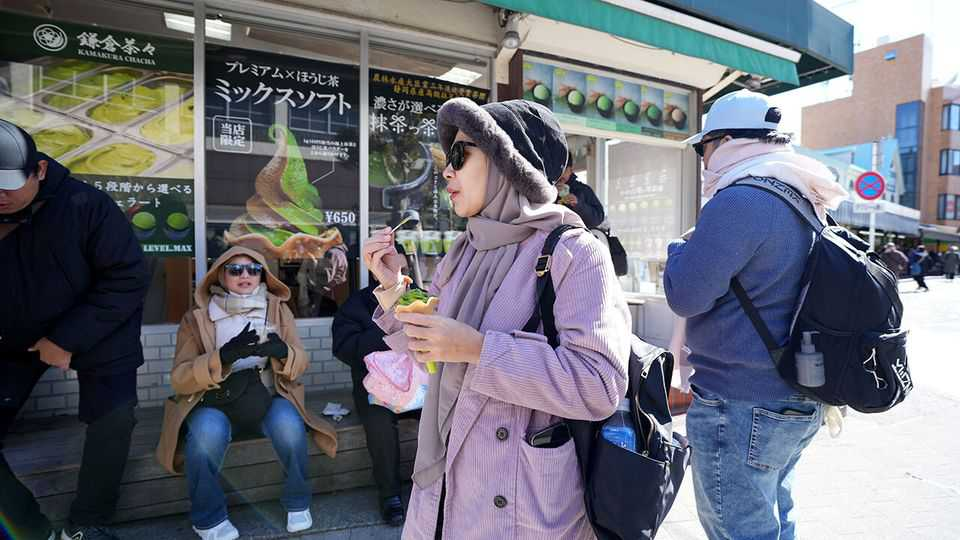

Japan’s tea farmers enjoy a matcha boom
But they face growing competition from China

Oct 1st 2026
ATOP A HILL in Kagoshima, on Japan’s southern island of Kyushu, neat rows of green tea bushes stretch across a vast field. When Nishi Toshimi inherited his family farm two decades ago, the industry was heading downhill; prices were falling and sales shrinking. Then the world went crazy for matcha. The boom of the past few years has felt “like a miracle,” he says.
Japan’s green-tea exports reached 12,600 tonnes last year, three times as much as a decade earlier; prices have also surged. Unlike Kyoto, famed for its coveted Uji matcha, or Shizuoka, a traditional producer of brewed green tea, Kagoshima is barely a household name. Yet the matcha boom has transformed its fortunes. In 2024 it became Japan’s top tea producer for the first time and now grows around 40% of its tencha, the leaf that is ground to make matcha powder. Even so, Japan is struggling to keep up with global demand. Its tea industry is in surprisingly poor shape, beset by ageing farmers, labour shortages and competition from China.
While the world craves matcha, most Japanese drink sencha, made by brewing tea leaves in the normal way, rather than dissolving matcha powder. Yet demand at home has long been falling as habits have changed. Consumption of tea leaves fell from 527 grams per person in 1970 to 233 in 2024. Farmers have left the business or retired without successors; between 2005 and 2025 the area devoted to tea cultivation shrank by 31%.
Nor can all farmers lean into the matcha boom. Producing tencha requires different cultivation methods, including shading bushes before harvest, and costly processing facilities.
Many in the industry think that Japan’s future lies at the high end. China, which produces 70% of the world’s matcha, may dwarf it in quantity, but Japanese producers argue that their matcha is tastier and far more sophisticated. Tea came to Japan from China, but Japan developed its own traditions around it, most famously the tea ceremony. Mr Nishi thinks Japan should establish itself as the Champagne region of matcha. “Otherwise, we’re going to lose out”, he says.■
For exclusive coverage of Asian politics, economics and security, sign up to Asia Bulletin, our weekly subscriber-only newsletter.